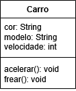

A Programação Orientada a Objetos (POO) é uma forma de organizar programas usando objetos, que representam coisas com características e ações. Lembrando que a programação orientada a objetos não tem nada a ver com arrastar componentes em telinhas, como alguns leigos erroneamente pensam. A programação orientada a objetos é uma forma especial de codificar programas, na verdade.
Na programação orientada a objetos temos as seguintes coisas:
Por exemplo, a classe Carro
define que todo carro tem cor, modelo e velocidade (atributos) e pode acelerar e frear (métodos). Um carro específico, como um Uno vermelho, é uma instância dessa classe (o objeto em si).
PS: Na programação orientada a objetos, várias coisas podem ser usadas para exemplificar classes e objetos, não apenas objetos literais como um carro ou um livro, mas também coisas como uma planta (tipo uma árvore), um animal (como um gato ou cachorro), uma pessoa (incluindo usuário, cliente, aluno e coisas do tipo) e até mesmo coisas conceituais como aula, consulta, reunião, conta bancária, etc.
Nas linguagens de programação, os objetos são utilizados para várias coisas, como listas, exceções e erros, conexões com banco de dados, para trabalhar com redes, criptografia, etc., além de componentes diversos. No Java mesmo, tirando os tipos primitivos padrão, tudo nele são objetos (incluindo a String), no C# e no Python tudo neles também são objetos.
Esses são os pilares da Programação Orientada a Objetos:
Algumas das linguagens mais populares que são orientadas a objetos são o Java, PHP, C++, C#, Visual Basic, Python, Ruby, Objective-C, Swift, Javascript e Kotlin, no entanto, nem todas são compatíveis com todos os conceitos, por exemplo:
Muitos consideram como a primeira linguagem orientada a objetos o Simula 67, mas os conceitos amadureceram mesmo com a linguagem Smalltalk.
Para aprender a programação orientada a objetos, deve-se saber a programação básica (estruturada) primeiro, pois praticamente tudo delas pode ser usados em programas orientados a objetos (como estruturas condicionais e de repetição, além do conceito de variáveis e funções/procedimentos, que são equivalentes aos atributos e métodos em POO). O ideal é saber o básico de uma linguagem que suporte POO para estudar esse paradigma, como o Java ou o C#. A maioria dos exercícios aqui usaremos o Java como base, mas mostraremos códigos de outras linguagens também, e as lições aqui podem ser adaptadas pras principais linguagens orientadas a objetos.
Veja um exemplo em Java da classe Carro, que escreve como um carro é e o que ele pode fazer:
public class Carro {
// Atributos (Características, como variáveis)
String cor;
String modelo;
int velocidade;
// Métodos (Ações, como funções ou procedimentos)
void acelerar() {
this.velocidade += 10;
}
void frear() {
this.velocidade -= 10;
}
}
Dentro de qualquer método, o this aponta para o próprio objeto em memória. Ele é usado principalmente para diferenciar atributos do objeto de variáveis locais ou parâmetros que têm o mesmo nome. Na maioria das vezes você não precisa usá-lo, mas ele é útil quando existe ambiguidade (nome de variável local igual ao nome de atributo). Dentro de métodos numa classe, o this funciona como eu, o próprio objeto
.
PS: Assim como na programação estruturada, não use comandos de saída em métodos void
para exibir dados, prefira retornar valores para não ficar engessado
no formato de exibição da linguagem (como o console ou uma interface gráfica). Nesse caso a função deverá ter, ao invés do void, o tipo primitivo retornado, como int, char ou mesmo outros objetos (incluindo a String). Prefira o void para tratar dados que não são exibidos ou retornados no método especificado. Usaremos alguns prints de console em alguns métodos void aqui, mas são pra questões puramente didáticas.
O diagrama dessa classe é esse:
PS: O uso desse tipo de diagrama em POO, se chama UML.
Código principal, onde criamos os objetos:
// Criando uma instância (objeto) da classe Carro
Carro cr = new Carro();
// Definindo valores para os atributos
cr.cor = "Vermelho";
cr.modelo = "Uno";
cr.velocidade = 0;
// Usando os métodos
cr.acelerar();
System.out.println("Cor: " + cr.cor);
System.out.println("Modelo: " + cr.modelo);
System.out.println("Velocidade atual: " + cr.velocidade);
cr.frear();
System.out.println("Velocidade atual: " + cr.velocidade);
O objeto é como uma variável especial que, além de guardar dados (atributos), também têm funcionalidades (métodos), que atuam sobre o próprio objeto ao qual pertencem.
No caso do Java, o tipo
do objeto é a classe da qual ele pertence, basicamente. Ali o tipo da variável cr (nosso objeto) é o tipo Carro
.
Fazendo a classe uma vez, podemos criar quantos objetos quisermos oriundos da mesma:
// Criando uma instância (objeto) da classe Carro
Carro cr = new Carro();
// Definindo valores para os atributos
cr.cor = "Vermelho";
cr.modelo = "Uno";
cr.velocidade = 0;
// Usando os métodos
cr.acelerar();
System.out.println("Cor: " + cr.cor);
System.out.println("Modelo: " + cr.modelo);
System.out.println("Velocidade atual: " + cr.velocidade);
cr.frear();
System.out.println("Velocidade atual: " + cr.velocidade);
System.out.println("------------------------------------");
// Criando outra instância (objeto) da classe Carro
Carro cr2 = new Carro();
// Definindo valores para os atributos
cr2.cor = "Preto";
cr2.modelo = "Gol";
cr2.velocidade = 0;
// Usando os métodos
cr2.acelerar();
cr2.acelerar();
System.out.println("Cor: " + cr2.cor);
System.out.println("Modelo: " + cr2.modelo);
System.out.println("Velocidade atual: " + cr2.velocidade);
cr2.frear();
System.out.println("Velocidade atual: " + cr2.velocidade);
Observe que, mesmo os dois objetos sendos oriundos da mesma classe, cada objeto tem suas características e comportamentos distintos, e funcionam isoladamente entre si.
Utilizando a mesma classe, podemos fazer por exemplo assim no código principal, utilizando arrays:
// Criando os objetos e colocando no array
Carro[] carros = new Carro[3];
carros[0] = new Carro();
carros[0].cor = "Vermelho";
carros[0].modelo = "Uno";
carros[0].velocidade = 0;
carros[1] = new Carro();
carros[1].cor = "Preto";
carros[1].modelo = "Gol";
carros[1].velocidade = 0;
carros[2] = new Carro();
carros[2].cor = "Azul";
carros[2].modelo = "Civic";
carros[2].velocidade = 0;
// Usando métodos em cada objeto
carros[0].acelerar();
carros[1].acelerar();
carros[2].acelerar();
// Mostrando resultados
for(int i = 0; i < carros.length; i++) {
System.out.println("Carro " + i + ":");
System.out.println("Modelo: " + carros[i].modelo);
System.out.println("Cor: " + carros[i].cor);
System.out.println("Velocidade: " + carros[i].velocidade);
System.out.println("------------------------------------");
}
PS: No Java, os arrays em si, de qualquer tipo, também são considerados objetos.
Algumas linguagens também permitem usar listas (que muitas vezes são classes nativas delas), como no Java mesmo:
// Criando uma lista de Carro usando ArrayList
List<Carro> listaCarros = new ArrayList<>(); // Importe java.util.List e java.util.ArrayList
// Criando os objetos e adicionando na lista
Carro cr1 = new Carro();
cr1.cor = "Vermelho";
cr1.modelo = "Uno";
cr1.velocidade = 0;
listaCarros.add(cr1);
Carro cr2 = new Carro();
cr2.cor = "Preto";
cr2.modelo = "Gol";
cr2.velocidade = 0;
listaCarros.add(cr2);
Carro cr3 = new Carro();
cr3.cor = "Azul";
cr3.modelo = "Civic";
cr3.velocidade = 0;
listaCarros.add(cr3);
// Usando métodos em cada carro da lista com for iterator
for(Carro c: listaCarros) {
c.acelerar();
}
// Mostrando os dados da lista com for normal
for(int i = 0; i < listaCarros.size(); i++) {
System.out.println("Carro " + i + ":");
System.out.println("Modelo: " + listaCarros.get(i).modelo);
System.out.println("Cor: " + listaCarros.get(i).cor);
System.out.println("Velocidade: " + listaCarros.get(i).velocidade);
System.out.println("------------------------------------");
}
Como visto, a orientação a objetos facilita o reuso de código, já que, uma vez pronta a classe (mesmo que tenhamos que escrever muito pra criar tudo que precisarmos), podemos utilizar ela pra criarmos quantos objetos precisarmos, e o programa principal fica mais simples, natural e muitas vezes menor. Cada objeto funciona isolado do outro, mas eles podem se comunicar, se preciso.
Encapsulamento é o ato de proteger os atributos de uma classe, deixando-os privados (private) para impedir acesso direto. Para ler ou alterar esses valores de forma controlada, usamos métodos públicos (public):
tipodo atributo correspondente (como
int, char ou mesmo outro objeto) que deverá ser retornado.void).Isso evita uso incorreto dos dados e deixa o código mais seguro e organizado.
Veja a classe Carro alterada com o encapsulamento de atributos:
public class Carro {
// Atributos privados (encapsulados)
private String cor;
private String modelo;
private int velocidade;
// Métodos públicos
public void acelerar() {
this.velocidade += 10;
}
public void frear() {
this.velocidade -= 10;
}
// Getter de cor
public String getCor() {
return this.cor;
}
// Setter de cor
public void setCor(String cor) {
this.cor = cor;
}
// Getter de modelo
public String getModelo() {
return this.modelo;
}
// Setter de modelo
public void setModelo(String modelo) {
this.modelo = modelo;
}
// Getter de velocidade
public int getVelocidade() {
return this.velocidade;
}
// Setter de velocidade
public void setVelocidade(int velocidade) {
this.velocidade = velocidade;
}
}
Lembrando, a variável com o this
é o atributo da classe, a variável que está sem ele é o parâmetro do método.
O diagrama dessa classe fica assim, com o +
representando o que é público e -
representando o que é privado:
Aí, no código principal, não poderemos usar os atributos definidos como private
, então deveremos usar os getters e setters para manipular os mesmos fora da classe:
Carro cr = new Carro();
// Definindo valores para os atributos
cr.setCor("Vermelho");
cr.setModelo("Uno");
cr.setVelocidade(0);
// Usando os métodos
cr.acelerar();
System.out.println("Cor: " + cr.getCor());
System.out.println("Modelo: " + cr.getModelo());
System.out.println("Velocidade atual: " + cr.getVelocidade());
cr.frear();
System.out.println("Velocidade atual: " + cr.getVelocidade());
Podemos ter apenas os getters ou apenas os setters nas classes também.
Sobre o privado e público, entenda o seguinte sobre a visibilidade dos atributos e métodos:
public.private.protected.Lembrando que os modificadores public, private e protected também podem ser usados nos métodos, seguindo a mesma regra dos atributos.
Num diagrama de classes, podemos identificar os símbolos assim:
| Símbolo | Significado |
|---|---|
| + | Público |
| - | Privado |
| # | Protegido |